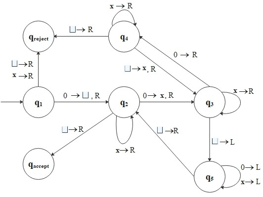

A Turing machine is a 7-tuple \((Q, \Sigma, \Gamma, \delta, q_0, q_{accept}, q_{reject})\) where \(Q, \Sigma, \Gamma\) are finite sets andHere, the differences between finite automata and Turing machine:
- \(Q\) is the set of states,
- \(\Sigma\) is the input alphabet not containing the blank symbol\(\, \sqcup\),
- \(\Gamma\) is the tape alphabet, where \(\sqcup \in \Gamma\) and \(\Sigma \subseteq \Gamma\),
- \(\delta: Q \times \Gamma \to Q \times \Gamma \times \{L, \, R\}\) is the transition function,
- \(q_0 \in Q\) is the start state,
- \(q_{accept} \in Q\) is the accept state, and
- \(q_{reject} \in Q\) is the reject state where \(q_{accept} \neq q_{reject}\).
A Turing machine is more powerful than any FA and indeed, can do everything that a real computer can do. (This means that if a problem cannot be solved by a TM the problem is beyond the theoretical limits of computation.)
- The tape has infinite length.
Initially the tape contains the input string and blank symblols everywhere else.- A Turing machine can read symbols from the tape and write symbols on it.
- The read-write head can move both to the left(L) and to the right(R).
To store information, the machine can write the information on the tape. At anytime, to read it, the machine can move its head back over the place, where the information has written.- Both reject and accept states take effect immediately.
There are three possible outcomes: accept, reject, and loop.
For each move, a Turing machine updates a configuration that is a set of three items:For example, \[ 1001 q_5 0110 \] represents a configuration when the tape is \(10010110\), the current state is \(q_5\), and the head is currently on the third \(0\).
- Current state
- Current tape contents
- Current head location
A Turing machine \(M\) accepts input \(w\) if there exists a sequence of configurations \(C_1, C_2, \cdots, C_k\) such thatThe collection of strings that \(M\) accepts is the language of \(M\), denoted \(L(M)\). We call a language Turing-recognizable if some Turing machine can recognize it. In general, we prefer a machine does not enter the infinite loop. A language is said to be Turing-decidable if some Turing machine decides it, in other words, the machine always makes a decision to accept or reject.
- \(C_1\) is the start configuration of \(M\) on \(w\).
- \(C_i\) yields \(C_{i+1}\).
- \(C_k\) is an accepting configuration.
Example: Consider a language \[ L_1 = \{0^{2^n} | n \geq 0\} \] which generates all strings of \(0\)s whose length is a power of 2.
A Turing machine \(M_1\) must decide \(L_1\):
\(M_1 = \) "On input string \(w\): "
\(Q = \{q_1, q_2, q_3, q_4, q_5, q_{accept}, q_{reject}\}, \, \Sigma = \{0\}, \, \Gamma = \{0, \text{ x }, \sqcup\}\), and the state diagram is as follows:
- Read left to right across the tape, crossing out every other \(0\).
- If in Stage 1, the tape contained a single \(0\), accept.
- If in Stage 1, the tape contained more than a single \(0\) and the number of \(0\)s was odd, reject.
- Return the head to the left-hand end of the tape.
- Go back to Stage 1."
For example, if input is \(0000\), the sequence of configurations is as follows \[ \begin{align*} &q_1 0 0 0 0 \\ &\sqcup q_2 0 0 0 \\ &\sqcup \text{x} q_3 0 0 \\ &\sqcup \text{x} 0 q_4 0 \\ &\sqcup \text{x} 0 \text{x} q_3 \sqcup \\ &\sqcup \text{x} 0 q_5 \text{x} \sqcup \\ &\sqcup \text{x} q_5 0 \text{x} \sqcup \\ &\sqcup q_5 \text{x} 0 \text{x} \sqcup \\ &q_5 \sqcup \text{x} 0 \text{x} \sqcup \\ \end{align*} \]
Back to Home